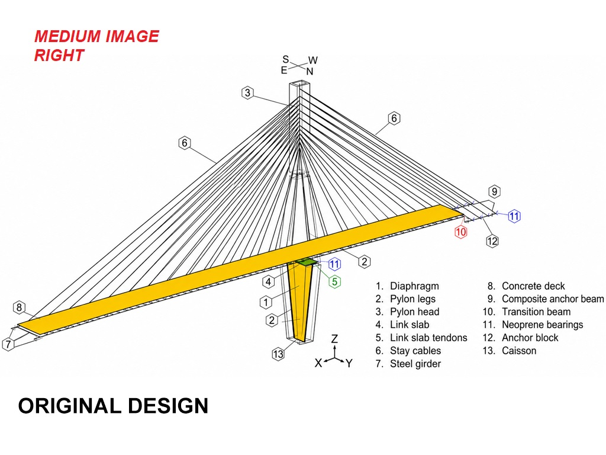
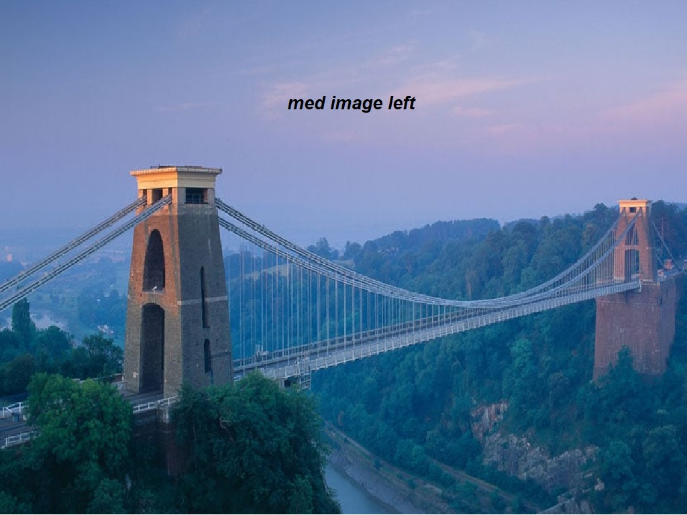

SLENDERNESS RATIO
The slenderness ratio of masonry is one of those easily overlooked considerations during bridge inspections. In simple terms, it describes the relationship between the effective height of a masonry element and its thickness.
For a conventional masonry wall acting primarily in compression, it can be expressed as:
Slenderness Ratio = Effective Height ÷ Wall Thickness
The principle is straightforward: as a wall becomes taller and thinner, it becomes more susceptible to bending and instability. A short, thick wall will generally be much more stable than a tall, thin one constructed from the same material. Makes sense right?
Geometry and Stability
The concept of slenderness has its origins in the study of column buckling, most notably the work of Euler in the 1700s.
Euler demonstrated that the stability of a compressed member depends not simply on the strength of the material, but also on its geometry, length and restraint. Although masonry walls do not behave in exactly the same way as idealised steel columns, the underlying principle remains relevant: geometry can govern stability long before the compressive strength of the material is exhausted.

SLENDERNESS IN BRIDGES
Bridges do not necessarily have “walls” in the conventional sense, but the principle of slenderness is relevant to a number of elements, including piers, spandrel walls and wing walls.
The difficulty is that these elements rarely behave as simple freestanding walls.
A masonry bridge wall may be inclined, restrained by adjoining masonry, loaded by an arch barrel, or supported laterally by fill behind it.
Spandrel and wing walls may also be subject to earth pressure, vehicle surcharge, water pressure and movement within the structure.
Their behaviour therefore depends on much more than their height and thickness alone.
Nevertheless, slenderness provides an important starting point when considering their stability.
RESTRAINT AND DETERIORATION
Where restraint is lost, loading changes or deterioration reduces the effective thickness of the masonry, the significance of slenderness can become considerably greater.
This is particularly important during inspection because an element that has remained stable for many decades may not necessarily retain its original structural conditions. Bulging, loss of mortar, displaced masonry, vegetation, washout of fill or separation from adjoining elements can all alter the way in which a wall is restrained.
In other words, it is not simply the original dimensions that matter; it is the effective geometry and restraint of the wall in its current condition.

A Simple Example
Consider a wall that is 10 metres high and 200 mm thick.
Converting the thickness to metres:
200 mm = 0.2 m
The slenderness ratio is therefore:
10 ÷ 0.2 = 50

TALL AND THIN
A ratio of 50 describes an extremely slender wall if it is considered as an unsupported masonry element.
Now imagine that the same 200 mm-thick wall is only 1 metre high:
1 ÷ 0.2 = 5
The material has not changed.
The thickness has not changed.
Yet the proportions of the wall are completely different, and so is its susceptibility to instability.
STABILITY IN PRACTICE
It does not take complicated mathematics to see why. Hold a short ruler upright and it is comparatively difficult to make it buckle sideways.
Do the same with a long, thin strip of material and lateral instability becomes much easier.
The same broad principle applies to masonry.
As Gordon (1991) discusses in relation to structural stability more generally, the practical height of structures is often governed not simply by the compressive strength of their materials, but by problems of stability and lateral loading.
Masonry can withstand very large compressive forces, but this does not mean that an indefinitely tall and thin masonry element would remain stable.
“The same broad principle applies to masonry.”
WHY SLENDERNESS MATTERS
A high slenderness ratio does not automatically mean that a masonry wall is unsafe. Equally, a low ratio does not guarantee stability.
The ratio must be considered alongside factors such as:
- lateral restraint
- wall inclination
- applied loading
- backing or retained fill
- foundation movement
- cracking
- bulging or deformation
- loss of masonry or mortar
- connections with adjoining elements
- the overall structural form of the bridge
For bridge inspectors, slenderness is therefore best viewed as an indicator of sensitivity to instability, rather than as a condition rating by itself.

EFFECTIVE THICKNESS AND RESTRAINT
A particularly important point is that deterioration can effectively increase slenderness. If the outer face of a wall has been lost, mortar has washed out, or sections of masonry have become detached from the main body of the wall, the effective structural thickness may be substantially less than the measured overall thickness. This is why it is preferable to know the thickness of the wall alongside the relevant joint loss.
Similarly, a wall that was originally restrained at its top or sides may begin behaving as a much more slender element if those connections deteriorate.
Slenderness therefore forms part of a wider discussion about masonry strength, restraint and durability.


“Tall and thin requires more caution than short and thick.”
THE SIMPLE RULE
The simple rule is:
Higher slenderness = greater sensitivity to bending and instability.
Or, in less technical terms:
Tall and thin requires more caution than short and thick.
The collapse of Scout Tunnel in 2012 is a good example of this, the parapet to the top was loaded as if it was a spandrel wall. Inevitably the soil pressure resulted in it leaning and failing towards the end of its service life.